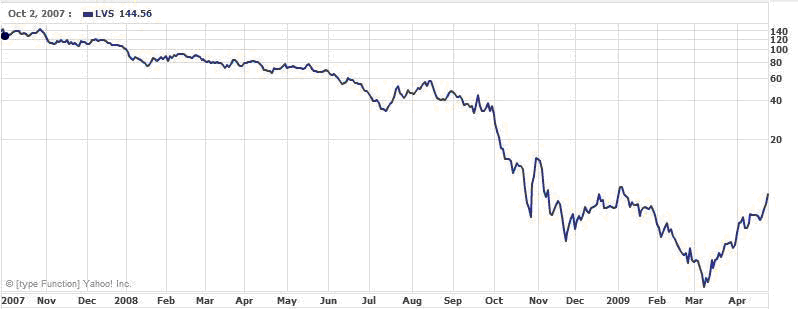

The primary problem of stock concentration is the high exposure to company-specific risk, which could be avoided through proper diversification. This risk was particularly noticeable in 2008 when the epic recession that really gained steam in October of 2008 devastated the markets.
Other problems frequently cited are lack of liquidity and low current income. While the owner of the stock may have significant wealth on paper, the owner may need current income to fund his or her lifestyle and expenses. For stocks with a small dividend, the owner's ability to utilize the wealth is limited unless the stock is hedged, sold or diversified - each option containing potential drawbacks and tax implications. Whatever the reason for maintaining the concentration, the investor is limited from diversifying into higher income-producing securities and reducing risk.
Company Specific Risk
An investor holding 500,000 shares of Las Vegas Sands (LVS) in October of 2007 would have been worth over $72 million. By March 2009, less than a year and a half later, that same investor's worth would have declined to approximately $710,000, representing a 99% decline in value.
